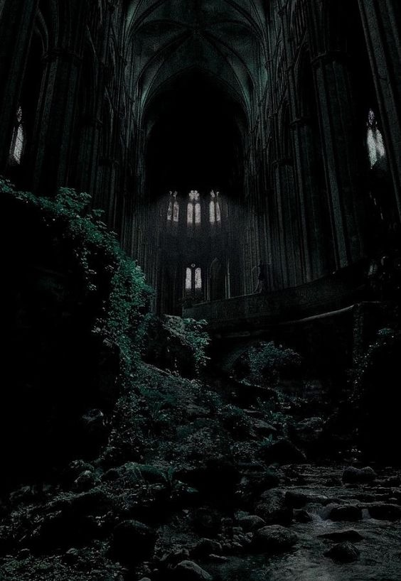

Духовный Мир.
Оглавление:
То, что за Гобеленом — Пенумбра
Мир, который является отражением нашего. Мир, который заселен духами, призраками и концепциями наших мыслей. Мир, который известен только магам и оборотням. Мир, имя которому — Пенумбра.
Пенумбра — мир, существующий параллельно и одновременно вне материального мира, где вера и метафора более важны, чем форма и сущность. Описать её целиком — непосильная задача, входящие в разряд невозможных. Однако, это не останавливает желающих приблизиться к ней, поскольку, хоть она и непостижима, но доступна восприятию различных мистиков. Единственное, что этому мешает — Барьер, разделяющий физический мир от мира духов. Преодоление барьера можно добиться различными способами: от порталов до использования астральной проекции. Впрочем, те, кто придерживаются научной картины мира, считают Пенумбру и вовсе альтернативным измерением, в который можно путешествовать при помощи высоких технологий.
В любом случае, путешествия по духовному миру — процесс довольно болезненный и долгий, схожее по ощущениям с прохождением сквозь психоделические тиски.
Сам мир Пенумбры поделен на три составляющие, которые по отдельности можно считать проявлениями новых слоев реальности.
Духовные Дебри.
Духовные дебри (ближняя к нам часть Пенумбры) — реальность, созданная духовными воплощениями недвижимого мира по образу и подобию технологического уровня бытия. Только здесь можно бродить, не опасаясь утерять нить жизни, поскольку эта реальность полностью копирует только окружающее ее материальное пространство — леса, небоскребы зданий, дороги. Гуляя по этим местам, твой единственный спутник — одиночество, которое будет сопровождать по всем Духовным Дебрям. Ни призраков, ни духов, только запустевшие города, кладбища и безлюдные пространства. Отличительная особенность этой реальности заключается в подчеркивании идеологической составляющей земных ландшафтов. Древний лес с Земли тут будет намного выше и более дремуч, а современные небоскрёбы выглядят куда более геометрически правильными. Но особо исторически или эмоционально заряженные места выглядят куда иначе. Так имеющий дурную славу мясокомбинат превратится в дебрях в нечто ужасающее, залитое кровью и заваленное мертвыми тушами животных.

Астрал.
Астрал или же средняя часть Пенумбры — мир идей, абстракций и концепций, где путешествия происходят исключительно путем силы мысли.
Эта реальность для магов и оборотней сложна, непопулярна и в какой-то степени опасна. Здесь любая мысль имеет свое физическое воплощение и со временем превращается в гремучую смесь стереотипов и предрассудков, способных похоронить под собой любое начинание. В этой реальности уживаются воплощения различных эмоций, начиная от радости и ликования и кончая отчаянием и печалью. Здесь сама материя реальности искажена до неузнаваемости. Так например, большая часть восточного побережья США представлена как один мегаполис с кучей небоскрёбов и расположенных рядом достопримечательностей. Однако, это самое безобидное из всех имеющихся в реальности вариантов — нигде нет такого количества духов, призраков, привидений и прочих нематериальных объектов, которых есть в Астрале. Пришедший любой сюда рано или поздно сойдет с ума от постоянного давления на разум и сознание, где в конечном итоге превратится в часть астрального тумана, сотканного из психических испарений прошлых личностей. Но несмотря на все эти трудности, маги и оборотни вынуждены обращаться к этому плану реальности как к источнику безграничному количеству потусторонних сущностей, в чьи услуги здесь можно обратиться за очень недорогую плату.
Земли Мёртвых.
Земли Мертвых — дальняя часть Пенумбры, которая наиболее близка к миру материальному. Она в какой-то степени похожа на Духовные дебри, но с некоторыми уточнениями.
Все в материальном мире, одушевленное или нет, имеет призрачное отражение в Землях Мертвых. Эти отражения двигаются синхронно с их материальными аналогами. Здания, люди, автомобили и другие вещи из Земли здесь всегда помечены признаками смерти. Дерево кажется гнилым, металл — ржавым, люди — бледными и болезненными. Здесь обитает разруха, смерть, распад и гниение. Эта реальность подобна пораженному проказой телу. В воздухе постоянно чувствуется гнилостный запах разложения, который источается от аналогов из земного мира. Вздыхать эти испарения смертельно опасное занятие — они приводят к медленной трансформации личности в безликую тень, лишенную какого-либо содержания. Неудачник, вздохнувший здесь, всегда застрянет в Землях Мертвых, где будет имитировать свою предыдущую жизнь, где станет призрачной составляющей отражения Земли.
Однако, оборотни и маги все равно будут подвергать себя опасности, чтобы попасть в дальнюю часть Пенумбры, которая открывает им возможность беспрепятственно следить за процессами, происходящими в материальном мире. Помимо этого, на краю Земли Мертвых находится Горизонт, который подобен Барьеру. Горизонт отделяет непосредственный духовный мир Земли от Бездны — смертельного места, где неопытный путешественник не выживет, попав туда.
Бездна.
Многие путешественники Пенумбры сравнивают Бездну с бесконечными глубинами космоса, в которой нет ни дня, ни ночи. Это пустота в буквальном смысле слова, переходящая в великое ничто, в котором горит бесконечное множество крошечных звезд — дальних планет, тускнеющих на фоне абсолютного мрака. Бездна в глазах знающих о ней представляет из себя возможность покинуть родной мир и отправиться туда, куда не достигают ни солнечный свет, ни какие-то иные лучи. О Бездне мало что известно, поскольку те, кто отправляется в ее края, не возвращаются назад. Трудно даже представить, как выглядит Бездна в ее истинном виде, поскольку знания о ее физическом измерении ограничиваются только легендами. Бездна лишена понятий пространства и времени — все, что существует в ее пределах, мгновенно сменяется и мгновенно же исчезает. Бездна это словно поиск философского камня — невозможный, но влекущий.
Влияние Пенумбры на материальный мир.
Одни считают, что Пенумбра — тень материального мира, а другие полагают, что материальный мир — просто тень Пенумбры. Какой бы ни была истина, объекты в материальном мире и их двойники в Пенумбре соединены в метафизической форме. Любые изменения происходят сначала в материальном мире, а затем отражаются в Пенумбре.
Все неодушевлённые объекты Земли имеют в Пенумбре «тень». Эта тень имеет приблизительно тот же самый вид и расположение, как и сам материальный объект. Материальные и духовные объекты стремятся к тому, чтобы оказаться в одном состоянии. Если дверь в духовном мире оставить открытой, то более вероятно, что кто-то забудет закрыть и материальную дверь. Если материальную дверь держaть запертой, духовная дверь в конечном итоге тоже окажется закрытой.
Это правило истинно и для внезапных перемен. Если здание в материальном мире разрушено, на время его духовный двойник останется на месте. Однако, здание в мире духов будет заменено двойником новостройки, устроенной на этом месте. Если духовное дерево срубить, то материальное дерево через некоторое время вызовет отвращение и, вероятно, будет срублено.
Скорость, с которой происходят изменения с тенями в Пенумбре, зависит от духовной силы этого изменения на Земле. События с сильным эмоциональным фоном, типа автокатастрофы, сильного разрушения или магических действий, имеет тенденцию к немедленному изменению в Пенумбре. С другой стороны, если материальный объект большой духовной силы удалён, его тень может оставаться в течение некоторого времени. Если церковь разрушена и заменена на нечто иное, то тень церкви в Пенумбре сохранятся в течение десятилетий. Иногда изменения в Пенумбре являются предвестниками изменений в материальном мире. Если собираются строить большой собор, он может появиться в духовном мире прежде, чем будет построен на Земле.